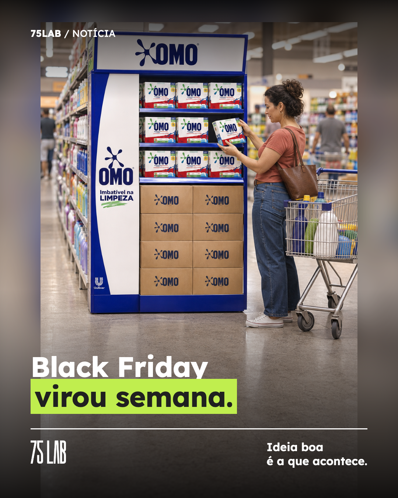
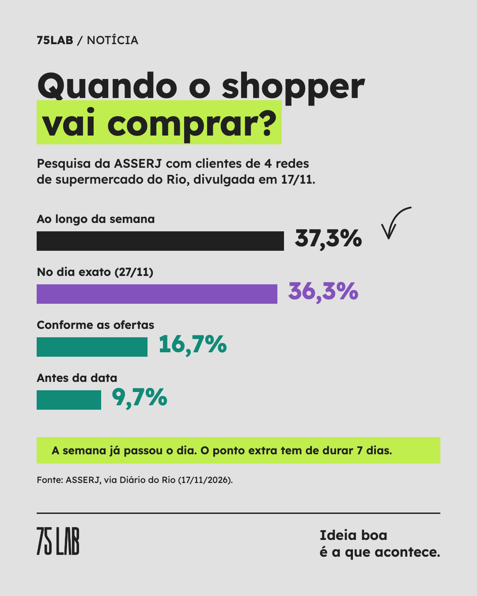
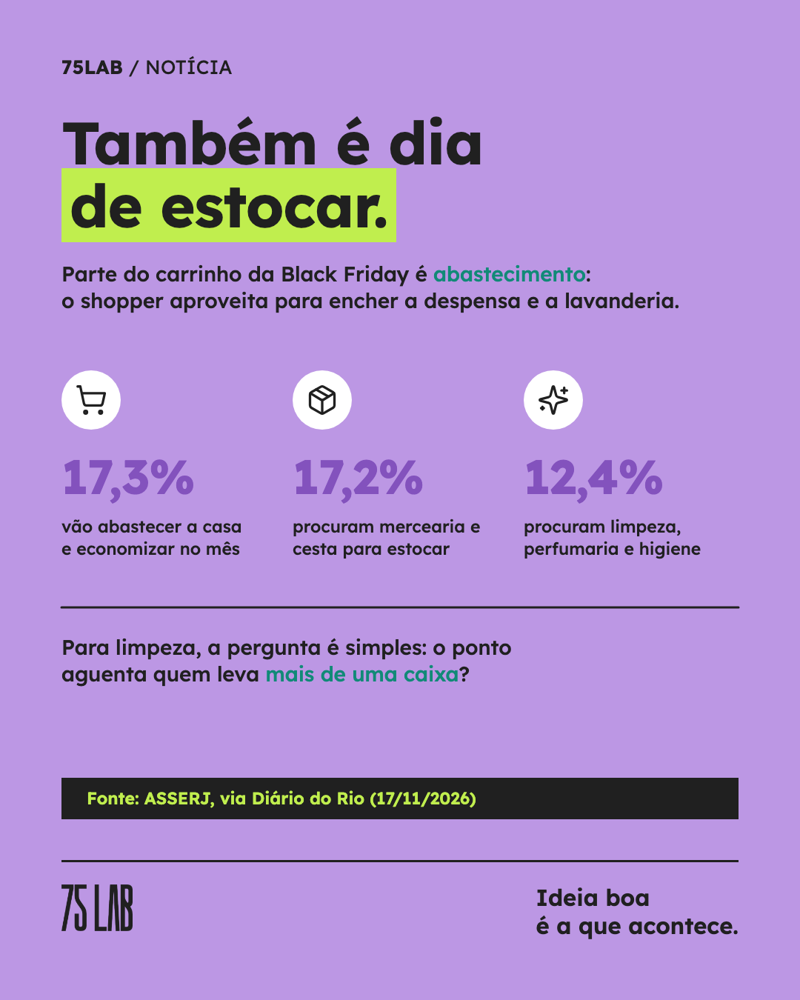
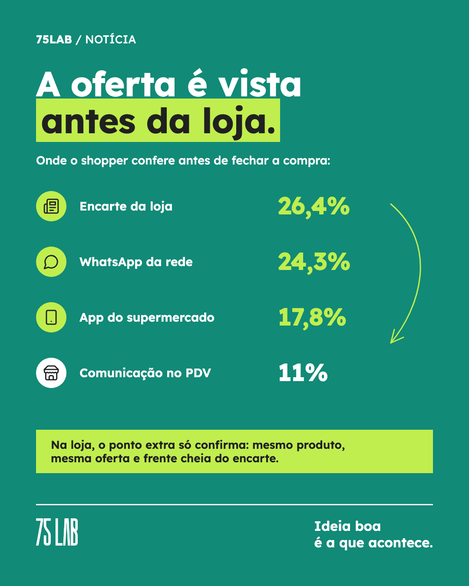
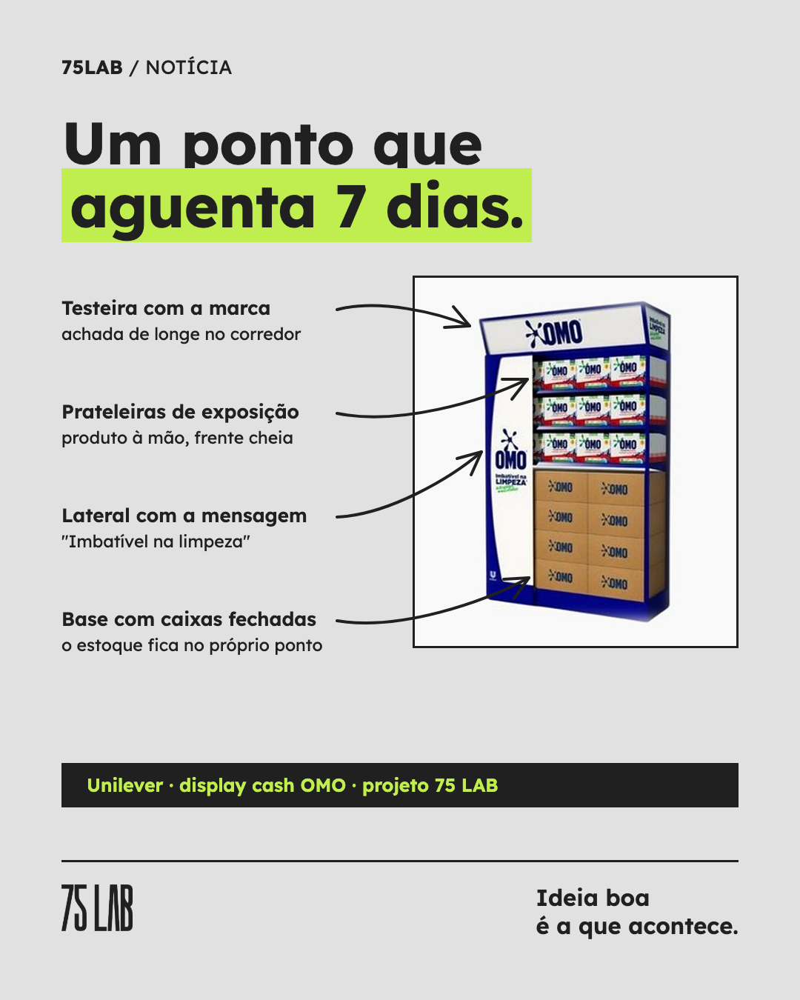
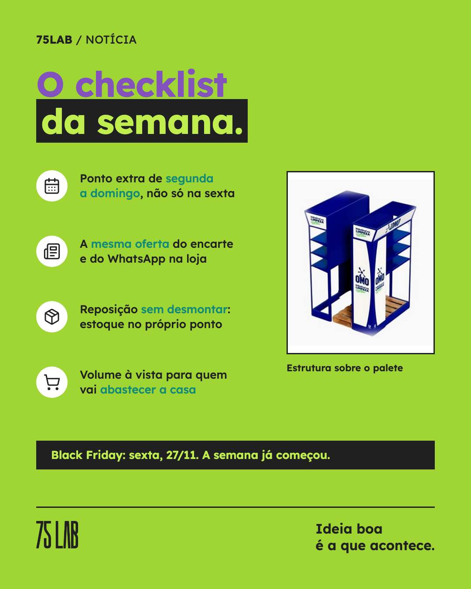
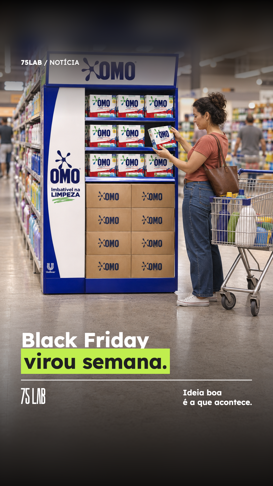
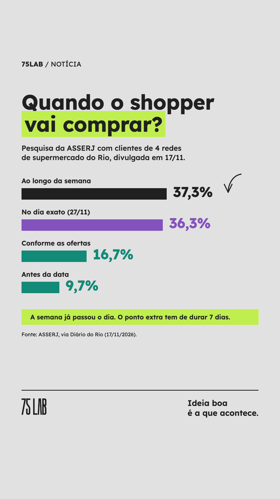
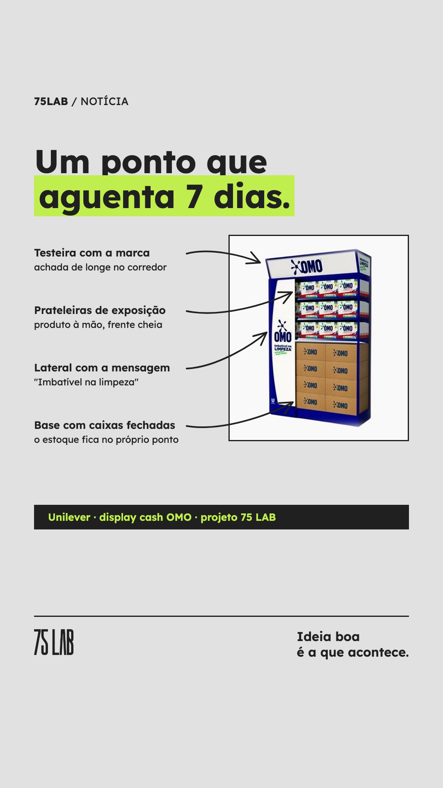
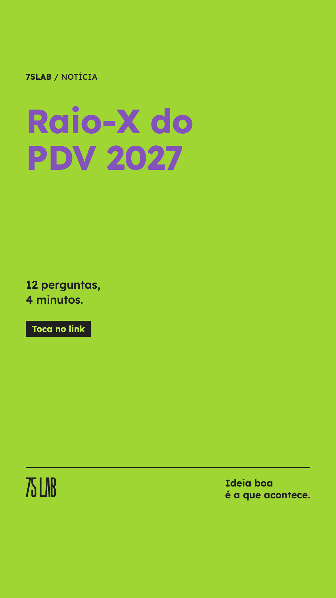

23/11 · noticia
Black Friday no supermercado virou semana e dia de abastecer a casa (ASSERJ, Diário do Rio, 17/11/2026); display cash OMO (Unilever) que segura 7 dias
Na pesquisa da ASSERJ com clientes de 4 redes do Rio, 37,3% preferem comprar ao longo da semana da Black Friday (36,3% no dia); 17,3% vão abastecer a casa e limpeza, perfumaria e higiene somam 12,4% das categorias. A oferta é vista antes da loja (encarte, WhatsApp, app). Leitura 75 LAB: ponto extra que dura 7 dias, mesma oferta do encarte na gôndola, reposição sem desmontar e volume à vista para quem abastece a casa; o display cash OMO (estrutura sobre palete, caixas na base) mostra o raciocínio.
23/11 · sai a partir de 12:30
Instagram · carrossel












Legenda
Black Friday no supermercado deixou de ser um dia. Uma pesquisa da ASSERJ com clientes de 4 redes de supermercado do Rio, divulgada em 17/11, mostra que 37,3% preferem comprar ao longo da semana do evento, contra 36,3% que compram no dia exato. E muita gente vai aproveitar a data para abastecer a casa: 17,3% dizem que o foco é economizar na rotina do mês, e limpeza, perfumaria e higiene aparecem em 12,4% das categorias procuradas. Outro dado que pesa para o trade: a oferta é vista antes da loja. Encarte (26,4%), WhatsApp da rede (24,3%) e app (17,8%) vêm na frente da comunicação no PDV (11%). O que isso pede na loja: 1. Ponto extra de segunda a domingo, não só na sexta. 2. A mesma oferta do encarte e do WhatsApp na gôndola. 3. Reposição sem desmontar, com o estoque no próprio ponto. 4. Volume à vista para quem vai abastecer a casa. No display cash que a 75 LAB desenhou para OMO, da Unilever, a base leva as caixas fechadas e as prateleiras de cima expõem o produto: o ponto segura a semana inteira 🛒 Fonte: ASSERJ, via Diário do Rio (17/11/2026). Link nos stories 📌 #trademarketing #pdv #blackfriday #varejo #supermercado
carrossel 6 cards
23/11 · sai a partir de 10:30
Texto da página da 75 LAB
Black Friday no supermercado virou semana. E virou dia de abastecer a casa. A ASSERJ ouviu clientes de 4 redes de supermercado do Rio e o Diário do Rio publicou os números em 17/11: • 37,3% preferem comprar ao longo da semana do evento; 36,3% compram no dia exato. • 17,3% dizem que o foco é abastecer a casa e economizar na rotina do mês. • Mercearia para estocar (17,2%) e limpeza, perfumaria e higiene (12,4%) estão entre as categorias procuradas. • Antes de comprar, o shopper confere encarte (26,4%), WhatsApp da rede (24,3%) e app (17,8%); a comunicação no PDV aparece com 11%. Nossa leitura para quem cuida de trade: 1. O ponto extra precisa durar sete dias, não um. Ruptura na quinta perde a venda de sexta. 2. A loja confirma o que o shopper já viu fora dela: mesmo produto, mesma oferta, frente cheia. 3. Quem abastece a casa leva volume. O ponto precisa mostrar estoque, não só a oferta. É o raciocínio do display cash que a 75 LAB desenhou para OMO, da Unilever: estrutura montada sobre o palete, caixas fechadas na base e produto exposto em cima, para o ponto se manter cheio sem desmontar. Matéria completa: https://diariodorio.com/economia/2026/11/17/black-friday-2026-servira-como-termometro-para-as-festas-de-fim-de-ano-nos-supermercados.html Mais sobre display de PDV: https://75lab.com.br/display-de-pdv.html?utm_source=linkedin&utm_medium=post #trademarketing #pdv #blackfriday
Texto do seu perfil
Sexta é Black Friday. Mas, no supermercado, ela já começou. Li a pesquisa da ASSERJ que saiu no Diário do Rio na semana passada: 37,3% dos clientes ouvidos preferem comprar ao longo da semana do evento, contra 36,3% no dia. E uma parte grande vai às compras para abastecer a casa: limpeza e mercearia para estocar estão na lista. Para mim, isso muda o briefing do ponto extra. A pergunta deixa de ser "como chamar atenção na sexta" e passa a ser "como esse ponto chega cheio no sétimo dia". Foi a lógica do display cash que a gente desenhou para OMO, da Unilever: monta sobre o palete, as caixas fechadas ficam na base e o produto vai para as prateleiras de cima. O estoque mora no próprio ponto. Outro número que me chamou atenção: antes de ir à loja, o shopper confere encarte, WhatsApp e app. Quando ele chega, a gôndola só precisa confirmar a oferta que ele já viu. A matéria: https://diariodorio.com/economia/2026/11/17/black-friday-2026-servira-como-termometro-para-as-festas-de-fim-de-ano-nos-supermercados.html #trademarketing #pdv #varejo
página, 6 cards
23/11 · sai a partir de 14:30
Reels
Legenda
Black Friday no supermercado virou semana: 37,3% compram ao longo dos 7 dias (ASSERJ, via Diário do Rio, 17/11/2026). O ponto extra precisa aguentar. #trademarketing #pdv #blackfriday #varejo
Roteiro
3.0 s · 4.6 s · 4.4 s · 4.4 s · 4.6 s · 4.0 s · 3.4 s · Um ponto que aguenta 7 dias. Siga @setecincolab
reels no perfil
23/11 · sai a partir de 12:30
Stories









Indicação
Tela 1: sem sticker Tela 2: Enquete no meio da tela: "Um dia" / "A semana toda" Tela 3: sem sticker Tela 4: sem sticker Tela 5: Link para https://75lab.com.br/raio-x-pdv.html?utm_source=instagram&utm_medium=stories Vídeo com locução (stories-video): A Black Friday no supermercado virou semana. / Trinta e sete vírgula três por cento preferem comprar ao longo da semana. No dia exato, trinta e seis vírgula três. / E muita gente aproveita para abastecer a casa: mercearia, limpeza e higiene entram na lista. / No display da OMO, as caixas ficam na base e o produto em cima: o ponto aguenta os sete dias. / E agora, uma ajuda: responde o Raio-X do PDV dois mil e vinte e sete. São doze perguntas, uns quatro minutos. O link está aqui.
enviado ao celular
Fontes